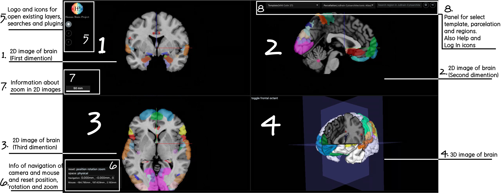

Navigation
Nehuba viewer contains with 4 main containers. 3 of them are 2D images of brain and each of them represents different dimentions of 3D image.
In the forth container we can see 3D image of brain. With that page contains some panels for manage application and get information.
Let's Presend the simple page of atlas viewer

As we see, simple page contains with 8 basic parts. In the image most of parts are marked with square.
- 2D image of brain. From this panel user can change navigation and rotation.
- Same 2D image from another dimention.
- Same 2D image from another dimention.
- 3D image of brain. From this panel user can change navigation and rotation only for 3d image. User can not change position of camera.
- Panel contains with logo and icons for open floating widgets as searches, layers, plugins, etc.
- Panel contains information about position of cursor and camera. From camera it available to reset position, rotation and zoom for both 2D and 3D images.
- Panel contains information about zoom of in 2D images.
- From panel it is available to select template and for this template select parselation. Also it's available to search and select or deselect regions of brain. With what panel contains help and log in buttons.
Position
Hold mouse left button + Mouse move - If user clicks to mouse left button and moves cursor,
center of picture will change according to the moving cursor. (See the gif).

With that, You can see that camera area is moving into the different 2 - 2D
images of nehuba container and camera areal is changing for 3D image. Also, If we look at #6 panel,
we can see thaw while moving the image, navigation parameters are changing.
The mouse weel - To increase or decreas zoom of the 2D image, user can scroll the mouse weel.
In this case, If cursor will hover some 2D image, scroll will change size of all 2D images, but will not change 3D image zoom.
To change 3D image zoom, cursor should hove the panel, thare 3D image are located.
Shift + Hold mouse left button + Mouse move - To change the rotation in 2D image, user can press shift and mouse left buttons and move cursor.
Cursor should be on 2D image in which we want to change orientation. While rotation we will see that image will change for another 2D images too, also camera areal will change for 3D image.
To change 3D image zoom, cursor should hove the panel, thare 3D image are located.
Ctrl + Scroll mouse weel - move camera